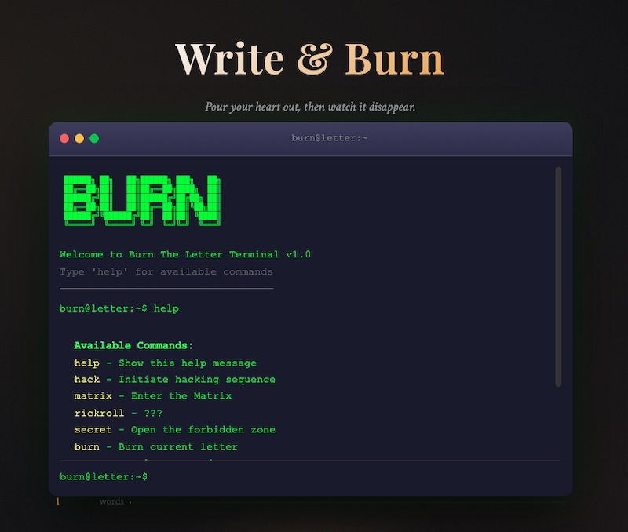

SYSTEM TARGET: BURNING LETTER APP
|
STATUS: OPERATIONAL
UTC: --:--:--
PRIVACY-FIRST INTERACTION UI // ARCHITECTURE SPECIFICATION
BURNING LETTER WEB APP
Interactive Cathartic Outlet featuring Zero-Data Persistence Architecture and Fluid Particle Physics
INTERFACE CAPTURES

PROJECT ARCHITECTURE
Burning Letter is a cathartic interactive web experience allowing users to type personal letters and permanently disintegrate them with custom visual particle burn effects. Designed around strict privacy guarantees, all text processing happens entirely inside client memory with zero server backend storage or tracking.
KEY FEATURES
- Zero-Log Guarantee: No telemetry, analytics, or user inputs are persisted to disk or external servers.
- Custom Burn Visual Physics: CSS keyframe particle shaders simulating ash dispersal.
- Gamified Achievements System: Embedded statistics tracking burn counts and unlocking hidden easter eggs.
HTML5
CSS Keyframes
JavaScript
Client-Side Security